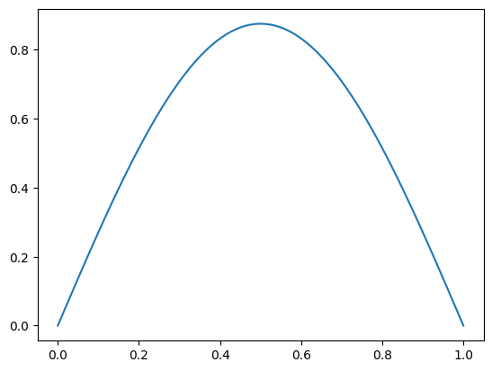
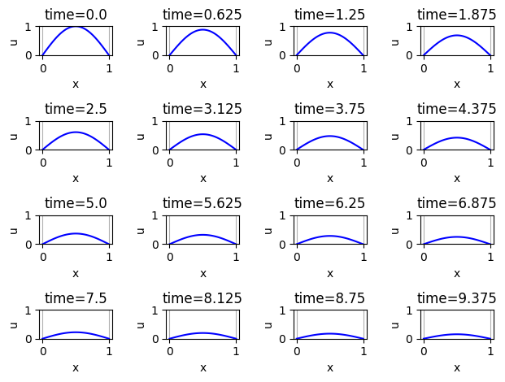
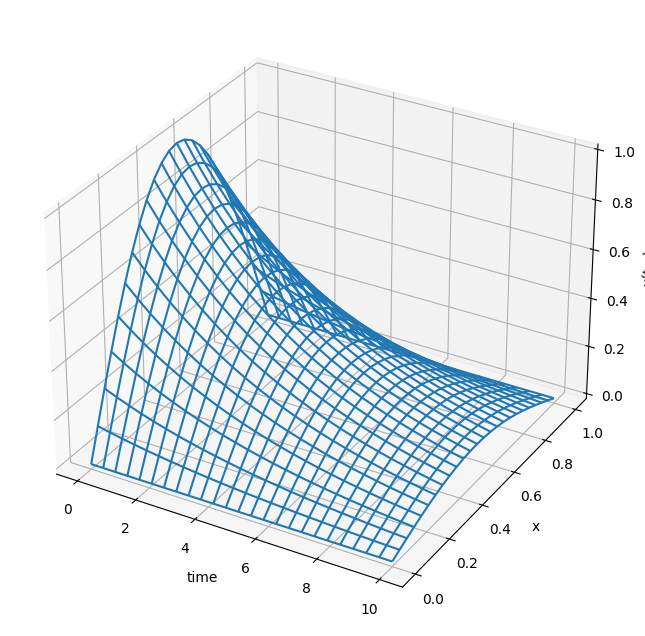

import numpy as np
import plotly.graph_objects as go
from scipy import optimize
from ipywidgets import interactive
import matplotlib.pyplot as plt9 Week 9 Participation

Name: [Type Your Name Here]
To begin all assignments (whether participation or homework), please save a copy of this notebook to your Google Drive by clicking File -> Save a copy in Drive
Practice
With a partner, answer each of the following questions. The main ideas in this problem should be review from multivariable calculus. If you and your partner are stuck then ask another group.
- What is a partial derivative (explain geometrically)?
ANS: If we look at a 3d surface, then we can look at the change of one variable at a time while holding others constant.
- What is the gradient of a function? What does it tell us physically or geometrically? If \(u(x,y)=x^2+\sin(xy)\), then what is \(\nabla u\)?
ANS: The gradient of a function is a vector representation of the partial derivatives. It can tells us the location of greatest change. The gradient of \(u\) was \(\langle 2x + y\cos(xy), x \cos(xy) \rangle\)
- What is the divergence of a vector-valued function? What does it tell us physically or geometrically? If \(F(x,y)=\langle \sin(xy),x^2 + y^2 \rangle\), then what is \(\nabla \cdot F\)?
ANS: The divergence is a scalar valued function and it could tell us whether a point is a source or a sink. The divergence of \(F\) is \(y (2 + \cos(xy))\).
9.1 Visualizing Solutions to PDEs
Now that we have some intuition on how to verify solutions for PDEs, let’s visualize them.
np.linspace(0,1,10)array([0. , 0.11111111, 0.22222222, 0.33333333, 0.44444444,
0.55555556, 0.66666667, 0.77777778, 0.88888889, 1. ])import numpy as np
import matplotlib.pyplot as plt
u = lambda t, x: np.exp(-0.2*t) * np.sin(np.pi*x)
x = np.linspace(0,1,100) # code that gives 100 equally spaced points from 0 to 1
t = np.linspace(0,10,16) # code that gives 16 equally spaced points from 0 to 10
#fig, ax = plt.subplots(nrows=4,ncols=4)
#counter = 0 # this counter will count through the times
plt.plot(x, u(t[1],x))
import numpy as np
import matplotlib.pyplot as plt
u = lambda t, x: np.exp(-0.2*t) * np.sin(np.pi*x)
x = np.linspace(0,1,101)# code that gives 100 equally spaced points from 0 to 1
t = np.linspace(0,10,17)# code that gives 16 equally spaced points from 0 to 10
fig, ax = plt.subplots(nrows=4,ncols=4)
counter = 0 # this counter will count through the times
for n in range(4):
for m in range(4):
ax[n,m].plot(x , u(t[counter],x), 'b') # plot x vs u(t[counter],x)
ax[n,m].grid()
ax[n,m].set_ylim(0,1) # same axis for every plot
ax[n,m].set_xlabel('x')
ax[n,m].set_ylabel('u')
ax[n,m].set_title("time="+np.str(t[counter]))
counter += 1 # increment the counter
fig.tight_layout()
plt.show()DeprecationWarning: `np.str` is a deprecated alias for the builtin `str`. To silence this warning, use `str` by itself. Doing this will not modify any behavior and is safe. If you specifically wanted the numpy scalar type, use `np.str_` here.
Deprecated in NumPy 1.20; for more details and guidance: https://numpy.org/devdocs/release/1.20.0-notes.html#deprecations
ax[n,m].set_title("time="+np.str(t[counter]))
import numpy as np
import matplotlib.pyplot as plt
from ipywidgets import interactive
u = lambda t, x: np.exp(-0.2*t) * (1*np.sin(1*np.pi*x))
x = np.linspace(0,1,100)
def plotter(T):
plt.plot(x , u(T,x), 'b')
plt.grid()
plt.ylim(0,1)
plt.show()
interactive_plot = interactive(plotter, T=(0,20,0.1))
interactive_plot# 3d version of solution
import numpy as np
import matplotlib.pyplot as plt
from mpl_toolkits.mplot3d import Axes3D
fig = plt.figure(figsize=(10,8))
ax = fig.add_subplot(projection='3d') # gca stands for "Get Current Axis"
u = lambda t, x: np.exp(-0.2*t)*np.sin(np.pi*x)
x = np.linspace(0,1,25)
t = np.linspace(0,10,25)
T, X = np.meshgrid(t,x)
ax.plot_wireframe(T,X,u(T,X))
ax.set_xlabel('time')
ax.set_ylabel('x')
ax.set_zlabel('u(t,x)')
plt.show()
9.2 Boundary Conditions
Practice Consider solving the heat equation \(u_t = D u_{xx}\) in 1 spatial dimension.
If a long thin metal rod is initially heated in the middle and the temperature at the ends of the rod is held fixed at 0 then the heat diffusion is described by the heat equation. What type of boundary conditions do we have in this setup? How can you tell? Draw a picture showing the expected evolution of the heat equation with these boundary conditions
ANS:
Practice
Consider solving the wave equation \(u_{tt} = c u_{xx}\) in 1 spatial dimension.
If a guitar string is pulled up in the center and held fixed at the frets then the resulting vibrations of the string are described by the wave equation. What type of boundary conditions do we have in this setup? How can you tell? Draw a picture showing the expected evolution of the heat equation with these boundary conditions.
ANS: